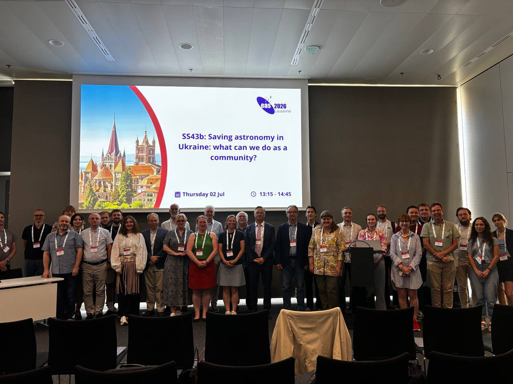
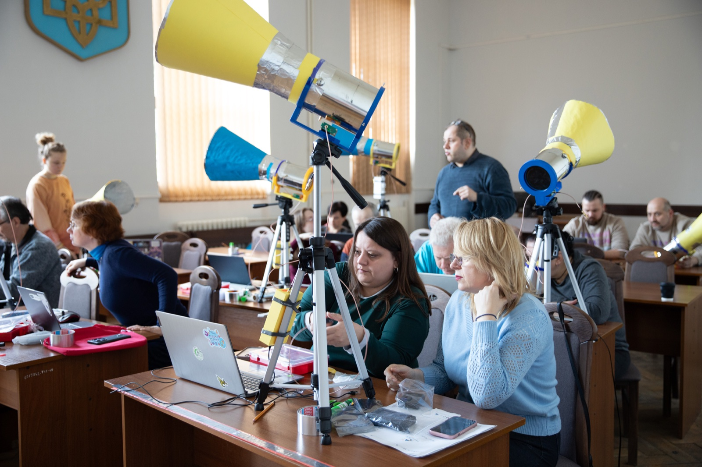
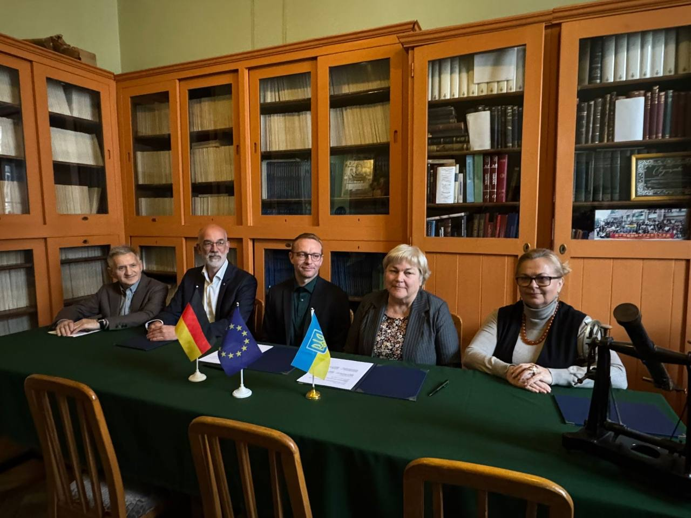
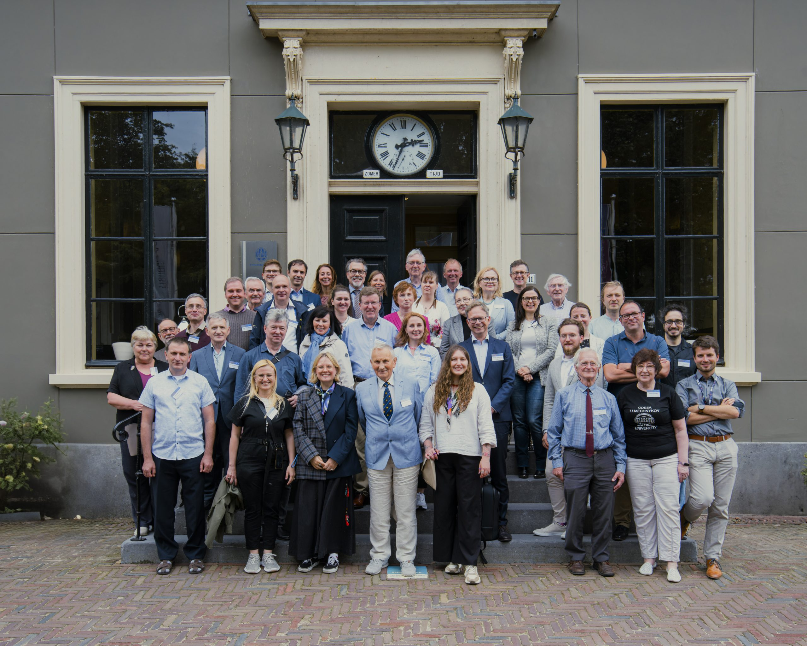

Human Capital and Scientific Networks
Supporting researchers and students and reconnecting them with international networks.
Community initiative
Rebuilding Ukrainian astronomy and integrating it into the European Research Area.
Supporting researchers and students and reconnecting them with international networks.
Restoring and modernising observatories, instruments and shared data facilities.
Turning astronomical research into technology, skills and economic value.
Inspiring the next generation and sharing astronomy with the public.
The Recovery Plan for Ukrainian Astronomy is a first version and a shared vision, not a final document. Developed by the Ukrainian astronomical community over the past year, it sets out a long-term direction for rebuilding the field. Rather than restoring only what was lost, it treats recovery as a chance to build a more modern, internationally connected and resilient astronomy, structured around four directions: human capital and scientific networks, research infrastructure, innovation and economic development, and education and public engagement.
This is an open, evolving document, and we are in the middle of gathering feedback to make it better. Read the current version, then share your comments, criticism and ideas. Your input will help shape the next revision.
Recovery Plan
for Ukrainian Astronomy

At the European Astronomical Society Annual Meeting (EAS 2026) in Lausanne, the Ukrainian astronomical community and colleagues from across Europe met during the special session "Saving astronomy in Ukraine: what can we do as a community?" to discuss the future of Ukrainian astronomy and identify concrete steps towards its recovery and long-term integration into the European Research Area.

Within the Recovery of Ukrainian Astronomy, DESY Director for Astroparticle Physics Christian Stegmann and Dr. Stefan Ohm (DZA) visited Lviv, signed an extension of the letter of intent with Ukrainian partners, now joined by the Junior Academy of Sciences of Ukraine, and held a radio astronomy training for teachers from across Ukraine.

Within the Recovery of Ukrainian Astronomy, the Ukrainian Astronomical Association signed a letter of intent in Lviv with European partners DESY and the German Centre for Astrophysics (DZA) to support the recovery and strengthening of Ukrainian astronomy, alongside meetings with the city's universities and students.

The recovery effort took shape at the meeting "Recovery Plan for Ukrainian Astronomy", hosted by Leiden Observatory and the IAU European Regional Office of Astronomy for Development (IAU-EROAD). Ukrainian astronomers opened a dialogue with European colleagues on rebuilding the field, summarised in a Nature Astronomy article.
Astronomy in Ukraine is carried by institutions with histories going back to the 18th century: the observatories and institutes of the National Academy of Sciences, and, at the universities, the observatories and the teaching departments, which are separately constituted units. Their profiles, presented by their own representatives at the Leiden meeting, are collected on a dedicated page.
National Academy of Sciences of Ukraine
Kyiv
Kharkiv
University observatories and research institutes
Kyiv
Kharkiv
Lviv
Lviv
Odesa
University departments and faculties
Kyiv
Kharkiv
Lviv
Lviv
Odesa
Joint projects carried out under the umbrella of the Recovery of Ukrainian Astronomy turn the plan into practice, together with European partners.
Affordable educational radio telescopes for schools and universities in Ukraine, and a network of trained teachers who build and use them. A project by DZA and DESY with the Junior Academy of Sciences of Ukraine, Lviv Polytechnic and the UAA, supported by the Dr. Hans Riegel Foundation. The first teacher training took place in Lviv in April 2026.
We are setting up a shared initiative email address. In the meantime, please use this temporary contact:
Pavlo Plotko
International Scientific Affairs, German Centre for Astrophysics (DZA)